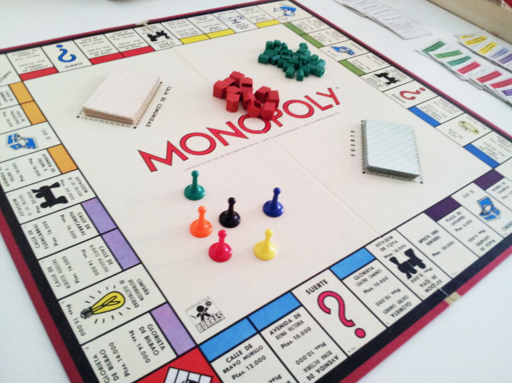

El juego de mesa más vendido de la historia
Un juego creado con la funcion de servir de herramienta para poder enseñar las teorías acerca de la justicia social y económica extraídas del estudio titulado Progreso y Miseria de Henry George.
comercializado por primera vez en 1936.
A lo largo de 80 años el juego a sufrido una notable evolución Sus múltiples ediciones y sus tantas versiones han dado pie a que se cambiara desde la caja que lo contiene hasta los elementos que lo componen. Logrando así, mantenerse como el favorito a través de las decadas
Con los años, la finalidad del juego cmbió para solo difrutar un buen rato, negociando propiedades y hasta haciendo uso de medios electrónicos para todas las transacciones del juego
con la información de Gráffica.info, cultura visual